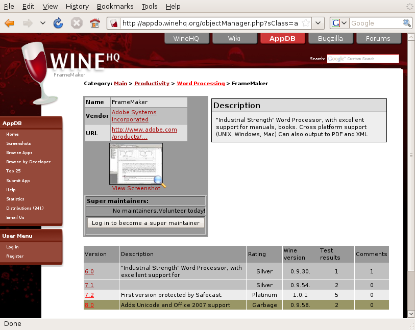

Wine
orLeaving Windows Behind? Bring your apps with you!
Dan Kegel
Cebit 2009
http://kegel.com/wine/cebit2009
DRAFT
All images copyrighted by their owners

Most people use Windows today...
but four trends are making it less important

Broadband adoption 30% in EU, 50% in US

Webmail now at 120 million daily users

Javascript suddenly fast enough for real apps

HTML 5 coming, will support offline apps

So many new apps use web standards, no longer locked in to Microsoft standards
But everyone's still running Windows, right?


Non-windows cellphones with great web browsers selling briskly

Cafes are often full of non-Windows laptops


Governments are sponsoring and using Linux


Dell now selling netbooks with Linux
OK, web apps work everywhere, and non-Windows systems are popular.
So what? I'm comfortable with Windows.

Windows has SEVEN TIMES as many viruses as Linux?
source: netlux.org
We have to cut a million bucks from our IT budget, and Microsoft support contracts cost HOW MUCH?

Some organizations are running Linux pilots to improve their bargaining position

OK, OK, I should try switching to Linux.
But there's just one more thing:


I have this old app I need to run... can I take it with me?
Sure, you could use VMWare to run those apps in Windows...
... but then you're not saving any money.
What to do?

I'm from the Wine Project, and I'm here to help you

Wine implements the Windows interfaces - and it's free software!

Come visit our scenic Wiki

appdb.winehq.org shows how well software runs in Wine

If the fine FAQ, manual, and App DB aren't enough help, ask the forum